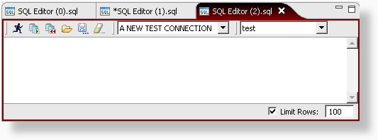
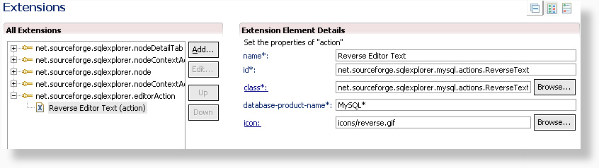
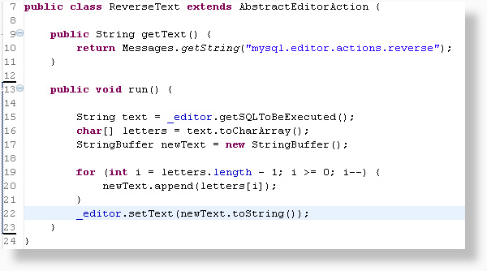
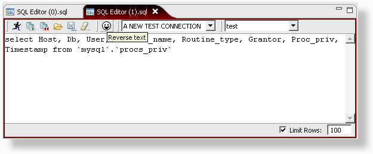
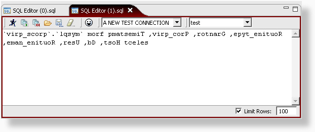

Creating new Editor Action Buttons
Using the net.sourceforge.sqlexplorer.editorAction extension point, we can add new action buttons to the SQL Editor.

Creating the extension action is done in the same way as for the other extension points, so I won't go into too much detail here. As you can see from the image below, there are no new unknown properties to define.

In the generated class we implement 2 methods:
getText(): This String will be used for the ToolTip popup when hovering above the action button.
run(): The main method for our action.
After adding some complex code, our action will look something like this:

Again we are ready to test our code. After starting SQL Explorer with the new code, we can see that our new action button is available in the editor.

And here's what the editor looks like after clicking the action button:
